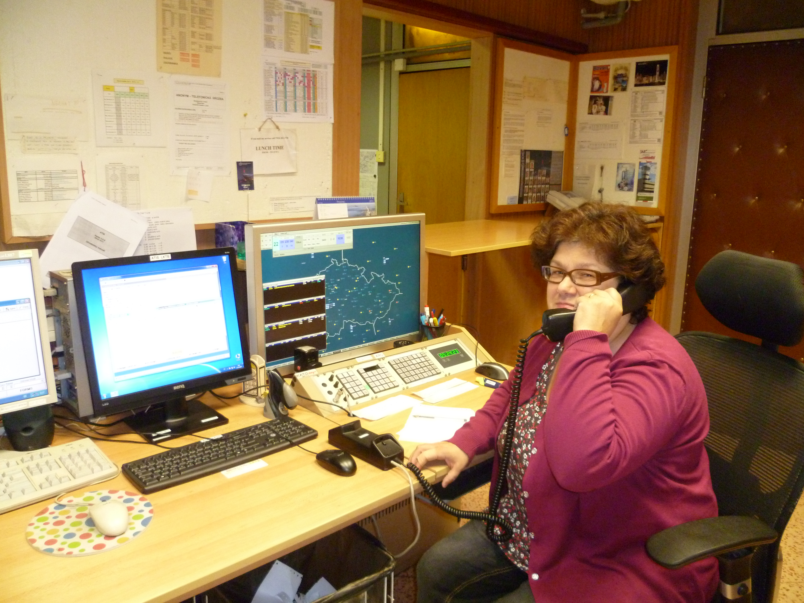
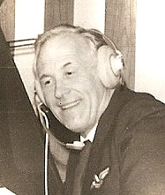
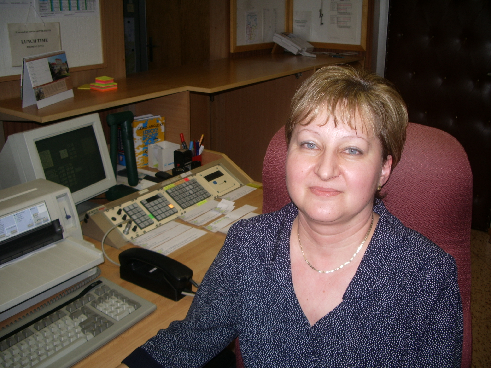
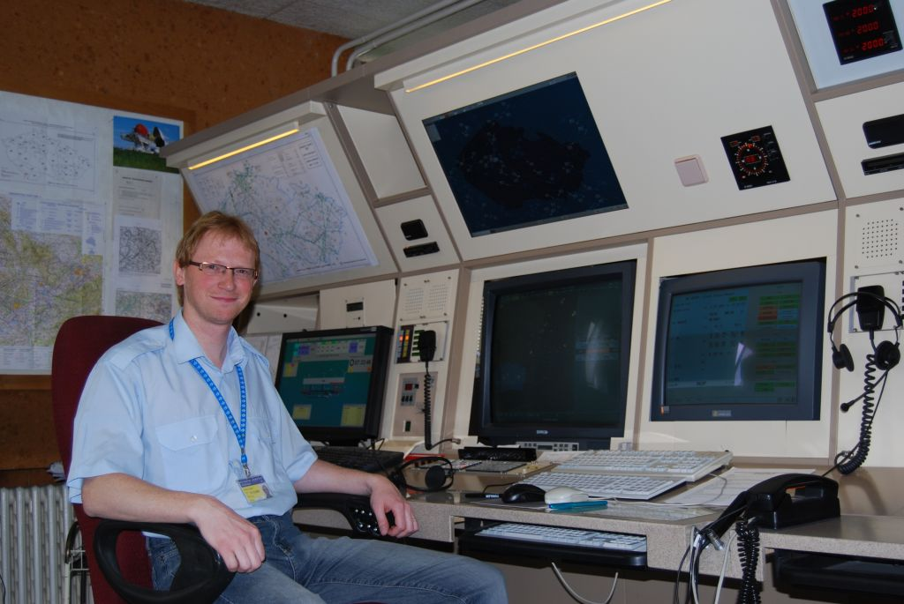
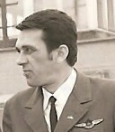
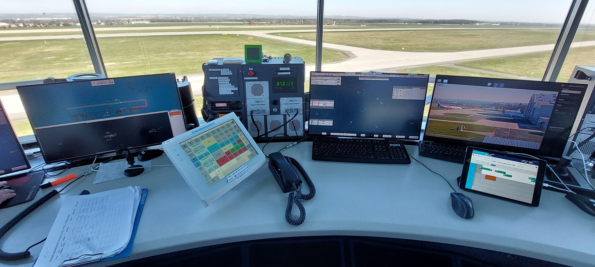
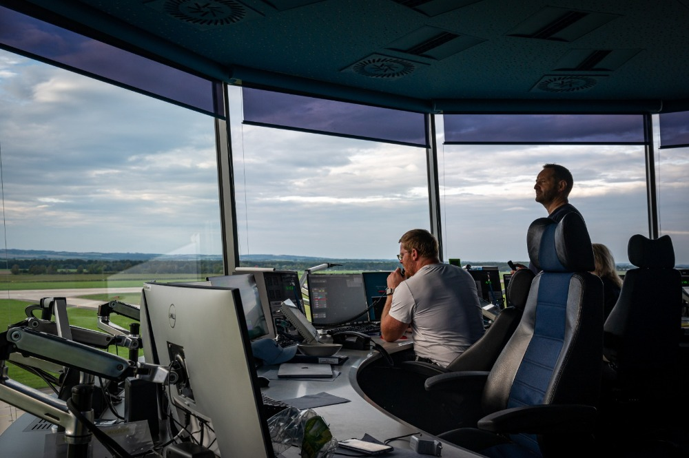
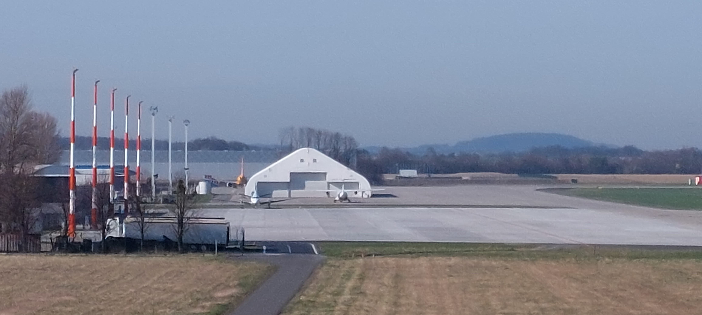
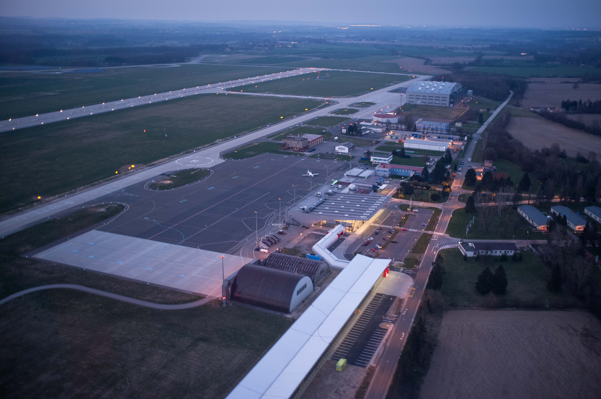

Historie řízení letového provozu v Ostravě
Přehled historie řízení letového provozu na letišti Ostrava od roku 1936 do současnosti.
ŘÍZENÍ LETOVÉHO PROVOZU V OSTRAVĚ V BĚHU ČASU
1936-2026
LETIŠTĚ HRABŮVKA, 1936 - 1959
S výstavbou letiště v katastrálním území Hrabůvky počítalo město Ostrava už od roku 1925. Samotné stavební práce se realizovaly roku 1936, v květnu téhož roku zde přistálo první letadlo. Fungoval zde Ostravský aeroklub.
Za druhé světové války sloužilo letiště Hrabůvka jako základna Luftwaffe.
V 50. letech zde stály čtyři hangáry, z nichž jeden se dochoval dodnes a slouží jako prodejna potravin (ulice Václava Jiřikovského). Letiště muselo na přelomu 50. a 60. let ustoupit bytové výstavbě v oblasti dnešního obvodu Ostrava-Jih. Jeho bývalá plocha je zastavěna obytnými domy. Jeho existenci připomíná název ulice U Letiště a jméno restaurace Dakota.
Po druhé světové válce bylo letiště prohlášeno za státní a bylo napojeno na vnitrostátní dopravu Československých aerolinií. Roku 1946 existovala linka do Prahy a krátce nato i do Zlína, Olomouce, Brna a Piešťan.
Od roku 1951 se létalo nově i do Košic. Od počátku 50. let bylo jasné, že letiště je nevhodně situováno, má malé rozměry a řadu překážek. Již od roku 1947 se počítalo s tím, že by v rozmezí 5-6 let mělo vzniknout nové letiště v Hrabové. Československé aerolinie kvůli nedostatku prostoru využívaly budovu dnešní restaurace Dakota pro účely letecké přepravy. prostor letiště začínal být čím dál více nevhodným.
Aerolinie letiště opustily v roce 1959, kdy bylo zprovozněno nové letiště v Mošnově. Krajský aeroklub Svazarmu se musel na začátku podzimu 1961 přestěhovat na letiště u Dolního Benešova, jelikož v roce 1960 bylo rozhodnuto o stavbě panelového sídliště na území dosluhujícího letiště Hrabůvka.


GONIO na Hrabůvce
Od roku 1929 se začaly budovat i civilní pozemní rádiové zaměřovače (goniometrické stanice - gonia) na důležitých dopravních letištích. Síť zaměřovačů umožnila zjišťovat polohu letadel a navádět je při přiblížení na přistání, a to i za zhoršených meteorologických podmínek a v noci.
Goniometrické stanice posádkám letadel nenařizovaly směr a výšku letu, ale poskytovaly pouze ty údaje, o které byly požádány. Veškerá odpovědnost za dosažení cíle a bezpečný let byla tehdy ještě na posádkách letadel. Princip zaměřování byl takový, že stanoviště zjistilo úhel, pod kterým přicházejí signály ze zaměřovaného letadla, a tento údaj se vynesl na pracovní mapu velkého měřítka. Totéž učinilo další stanoviště, a v průsečíku těchto úhlů byla vyznačena okamžitá poloha zaměřovaného letadla. Palubní radiotelegrafista dostal odpověď. Společným jazykem mezi pozemními a palubními stanicemi byl mezinárodní Q-kód, doplněný mezinárodními radiotelegrafními zkratkami.


LETIŠTĚ MOŠNOV (LKMT, OSR) OD 1959
Historie mezinárodního letiště Ostrava-Mošnov sahá do začátku 20. století. V té době žili v v nedaleké obci Harty bratři Žurovci. Ti byli v letech 1909 až 1914 regionálními průkopníky letectví. Bohužel první světová válka zabránila dalšímu pokračování letectví na Ostravsku.
Mošnovské letiště bylo poprvé využito až za druhé světové války. Po okupaci Československa v roce 1939 zde Luftwaffe postavila polní letiště v rámci svých invazních příprav na Polsko. Po válce letiště chvíli využívala československá letecká divize.
Novodobá historie začíná v roce 1956, kdy byla zahájena výstavba letiště tak, jak ho známe dnes. Letiště zpočátku mělo sloužit pro armádní účely, nicméně 16.10. 1959 se na letišti zahájil i civilní letecký provoz ČSA. Létaly se převážně vnitrostátní lety, nicméně nepravidelně byly obsluhovány i zahraniční lety.
Řízení letového provozu LKMT
1957
16.10. byl zahájen civilní provoz s Tu 104 A Il 14 a 18
1960-1970
7.5. 1965 Zahájen provoz PAR RP2 a přehledový RL 2
16.6. 1966 otevřena letištní hala, dnes příletová
V šedesátých a sedmdesátých letech bylo v provozu také aerotaxi, které se těšilo velké popularitě. Vojenská báze v Mošnově skončila v roce 1993 a od té doby se jedná pouze o civilní letiště. Od roku 2004 je provozovatelem letiště společnost Letiště Ostrava, a.s..



Období 1968-1989
1968
20.-21.8. 1968 Obsazení letiště Sovětskou armádou letadly An 12
1969
10/69 podnik koupil chalupu na Morávce, později přešla do majetku letiště Ostrava, ještě později prodána do soukromých rukou.
1970-1980
1970-72 rekonstrukce TWR LKMT
1977 zahájily provoz Letecká doprava Vítkovice, od roku 1995 do 2000 Air Ostrava
1980
1980 RL2 a RP2 jsou nahrazeny RL41 a RP 36
1981 Instalován ILS 22 LKMT
Zprovozněno výcvikové středisko na staré Ruzyni
1982
personální čistka na LKMT, propuštěni Máca, Kocián, Kočvara, Eva Forchtgottová/Malchárková
Staňková přešla na ředitelství do Prahy
1984
generální oprava RWY LKMT, provoz přesunut do LKPO (mezinárodní doprava Tu 134) a LKZA (vnitro YK40)
1989
Mošnov se stává mezinárodním letištěm
6/1989 na LKMT poprvé přistála An 225 Mrija, letecký den s Květy, možnost prohlídky letadla na APN central.


Období 1990-1999
1991
8/1991 Otevření svobodného bezcelního pásma Free Zone Ostrava
31.8.1991 Policejní razie Červená rtuť na stanovišti TWR LKMT
1992
1992 Stávková pohotovost řídících letového provozu kvůli zvýšení platů, druhá příprava na stávku proběhla 2000/01, poté došlo k dramatickému zvýšení platů. A také ke změně zákona, ATCO mohou stávkovat pouze kvůli pracovním podmínkám, nikoli za platy.
1993
31.12.1993 opustila letiště armáda, letiště se stalo čistě civilním.
1994
TWR/APP přestěhována do nových prostor nad hasičárnou. Zajímavost, výhled pouze 270˚, východní strana je zeď.
1995
Z podnikové dopravy Air vítkovice vznikla civilní dopravní společnost Air Ostrava. Operovala hlavně lety do Prahy, ale i Mnichova, Vídně a Amsterdamu


Období 2000-2009
2000
Zkrachovala AIR OSTRAVA.
Zavedení nového zobrazovacího systému Eurocat 2000.
2001
Proběhla rekonstrukce prostor TWR, takže jsme se znovu dvakrát stěhovali, zpět na starou bílou věž a zase zpátky.
2002
Prudký nárůst platů dvakrát 20% na jaře a na podzim.
2003
Digitalizace primárního radaru.
Otevření přístavby odletové haly LKMT.
8/2003 Rekonstrukce letištní haly LKMT.
Koncem roku armáda opouští letiště.
1. ročník dnů NATO na letišti Mošnov
2004
Letiště bylo převedeno do vlastnictví Moravskoslezského kraje
Zahájení provozu stacionárního radaru P3D s pokrytím sekundárního signálu už od země.
Navázali jsme kontakty s polskými řídícími v Katovicích a Krakově. První setkání proběhlo právě na letišti EPKK.
1.7. Letiště Mošnov se stává akciovou společností, 100% vlastník MS kraj
2005-2009
Návštěva polských řídících u nás
Zahájení výstavby nové odletové haly
Letiště Mošnov se přejmenovalo na Letiště Leoše Janáčka
Zprovozněn areál ŘLP v Jenči
6/2006 První cykloakce LKMT Cup, jede se Poodří.
13.12.2006 Je otevřena nová odletová hala.
18.7.2009 Definitivní vyřazení radaru RL 41 z provozu, zůstává na původním místě jako muzejní exponát (do 22.2.2023)



Období 2010-2019
2010-2013
2/2010 TR8 uvedena po mnohých problémech do provozu
Celý rok byl ve znamení důsledků krize z roku 2008, nastal výrazný pokles provozu.
11/2012 Ukončení racionalizace APPs. Zahájení budování Supernízkých prostorů (SNS)
2014
Konec AFIS na sportovních letištích, tuto službu může nově poskytovat pouze vycvičený a licencovaný personál.
1.5. Zahájily provoz SNS. Jde o největší změnu poskytování služeb ATS na regionech, kdy se obsluhuje 1/3 republiky z každého regionu od země až do FL 125. Licence se nazývá TCL. Frekvence se změnila z 125,1 na 119,375 MHz.
2015-2016
13.4.2015 zřízena železnice na LKMT.
1.6.2016 Přestěhovali jsme se na novou TWR/APP LKMT, ještě 2 měsíce byl kontrolní provoz se staré TWR. Poté již jsme v novém.
1.6. Byl zrušen místní briefing, byl přestěhován na centrální do Prahy.
2017-2019
3/2017 představen projekt Harmonizace ŘLP, přestěhování SNS a APPs do Prahy
5/2017 pohovory s řídícími LKMT o zájmu přechodu na TCC/TERM do PRG
11/19 současným OJTI nebyly prodlouženy kvalifikace z důvodu odmítnutí podepsání dohody s podnikem o výcviku nových ATCO.



Období 2020-2026
2020-2021: COVID-19
Polská společnost LOT nahrazuje ČSA na pravidelných linkách.
3/2020 – 12/2021 Začíná koronavirové šílenství. Provoz spadl o 90%. ATCO byly odebrány 10% příplatky a byla technicky snížena mzda o 15% redukcí pracovního úvazku z 34 na 29 hodin týdně.
27.2.2021 v LKMT končí APP, zavedeno SPO a ATCO/M.
Zůstává služba TWR v CRT Mošnov do 2500 stop AMSL.
2022
24.2.2022 zahájen provoz na novém zobrazovacím systému Top Sky – oblast /TR8 pro regiony. Začala válka na Ukrajině. Tím ovšem skončil covid.
práce na projektu rekonstrukce RWY za cca. 2 mld. Kč
29.12. jsme zrušili službu APP. Nově ji v sobě zahrnuje ACC TERM (APP+SNS ACC LOW).
Volací znak Ostrava definitivně zaniká.
2023-2025
Od 1/2023 platy a bonusy vráceny do původního stavu + 10% přidáno na ZMT
3/2023 zahájena výstavba letištního cargoterminálu.
ČSA definitivně ukončilo činnost
Na tzv. Okách na severu letiště byl postaven nový hangár pro GA
Po dlouhé době byl zahájen místní výcvik nového ATCO, Jana Fajkuse, poprvé pouze pro TWR. Výcvik byl úspěšně ukončen v září.
V červenci 2025 byly zrušeny všechny zbývající NDB včetně našich markerů Nada a Rada

